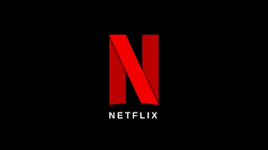
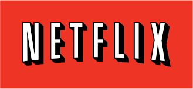

Netflix je ameriško podjetje, ki se ukvarja s pretočno distribucijo filmov, televizijskih serij in drugih plačljivih zabavnih vsebin prek interneta. Ustanovila sta ga Reed Hastings in Marc Randolph 29. avgusta 1997 v Scotts Valleyju v Kaliforniji. Leta 2014 je Netflix razširil svojo filmsko in televizijsko produkcijo ter spletno distribucijo. Njegov sedež je v Los Gatosu v Kaliforniji. Druge pisarne so bile pozneje ustanovljene v Braziliji, Indiji, na Japonskem, v Južni Koreji, Španiji, Franciji, Združenem kraljestvu, na Nizozemskem, v Nemčiji in Italiji. Je med glavnimi pretočnimi platformami za filme in TV serije skupaj s Prime Video, Disney +, Crunchyroll, HBO Max, Hulu, Paramount + in Peacock. Začelo se je kot posel izposoje DVD-jev in videoiger, čeprav je Hastings približno leto kasneje prodajo pustil ob strani. Uporabniki so lahko diske rezervirali prek interneta in jih preko poštne službe dostavili neposredno na dom. Od leta 2008 je podjetje aktiviralo spletno storitev pretakanja na zahtevo, dostopno s posebno naročnino, ki je kmalu postala njena glavna dejavnost.
Netflix sta 29. avgusta 1997 v Scotts Valleyju v Kaliforniji ustanovila Marc Randolph[9] in Reed Hastings. Randolph je delal kot direktor marketinga za Hastingsovo podjetje, Pure Atria. Randolph je bil eden od soustanoviteljev MicroWarehouse, podjetja za naročanje računalnikov po pošti, kasneje pa ga je najel Borland International come vicepresidente del marketing. Hastings, informatico e matematico, ha venduto Pure Atria a Rational Software Corporation nel 1997 per 700 milioni di dollari in quella che è stata l'acquisizione più grande nella storia della Silicon Valley. I due hanno avuto l'idea di creare Netflix mentre facevano i pendolari tra le loro abitazioni a Santa Cruz e il quartier generale di Pure Atria a Sunnyvale, nell'attesa che gli enti regolatori governativi approvassero la fusione, sebbene Hastings abbia fornito diverse altre spiegazioni di come è nata l'idea della società. Hastings investì $2,5 milioni per l'avvio di Netflix. Randolph era un ammiratore della nascente società di e-commerce Amazon, e ha voluto trovare una ampia categoria di articoli portatili da vendere su Internet utilizzando un modello simile. Hanno considerato e rifiutato i nastri VHS come troppo costosi da immagazzinare e troppo delicati da spedire. Quando hanno sentito parlare di DVD, disponibili solo in alcuni mercati a quel tempo, nel 1997, hanno testato il concetto di venderli o noleggiarli per posta, spedendo un compact disc (CD) alla casa di Hastings a Santa Cruz. Quando il disco è arrivato intatto, hanno deciso di intraprendere l'impresa di vendita e noleggio di video, impresa che oggi ha un valore stimato di 29,4 miliardi di dollari. Netflix è stata lanciata il 14 aprile 1998, con solo 30 dipendenti e 925 DVD disponibili con un modello di pagamento in base al canone, con tariffe e scadenze simili a quelle del suo rivale Blockbuster.

| Najuspešnejši film: |
|---|
| Red Notice z 364 milioni ur |
| Don't Look Up z 359 milioni ur |
| Bird Box z 282 milioni ur |
| The Gray Man z 254 milioni ur |
| Glass Onion - Knives Out z 253 milioni ur |
| The Adam Project z 233 milioni ur |
| Tyler Rake (Extraction) z 231 milioni ur |
| Purple Hearts z 229 milioni ur |
| The Unforgivable z 215 milioni ur |
| The Irishman z 215 milioni ur |
| The Kissing Booth 2 z 209 milioni ur |
| 6 Underground z 205 milioni ur |